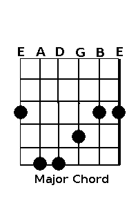
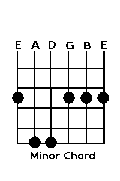
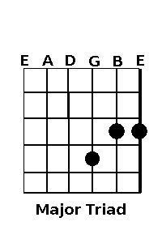
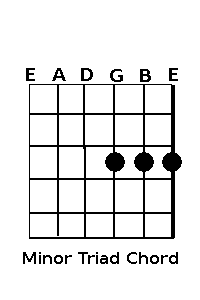

4-22-18
Hello, this tool is for beginning guitarists to recognize root 1 and 6 chords, choosing triads (groups
of three notes to match a major or minor chord. Below are some diagrams to help out, just pick one of these shapes, move it up
and down the neck, and see which chord you get! Note how the further you go up to the 12th fret, the root note keeps ascending (e.g. from A to A# to B).
Also, if you do not wish to play a note on a certain string than click the X radio button for that string, this will mute it!




References:
w3schools.com
php.net
tutorialspoint.com
Images made by Matt Gilot (myself)